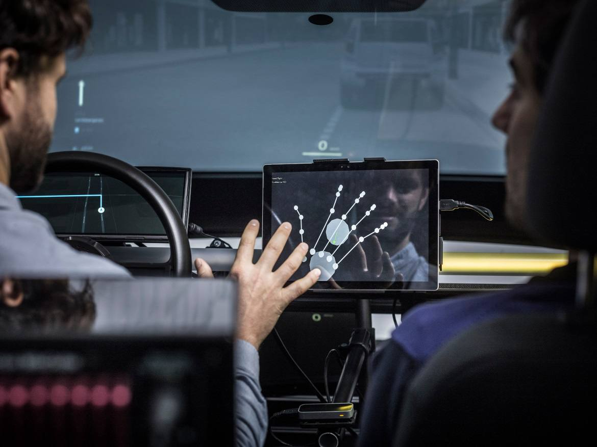
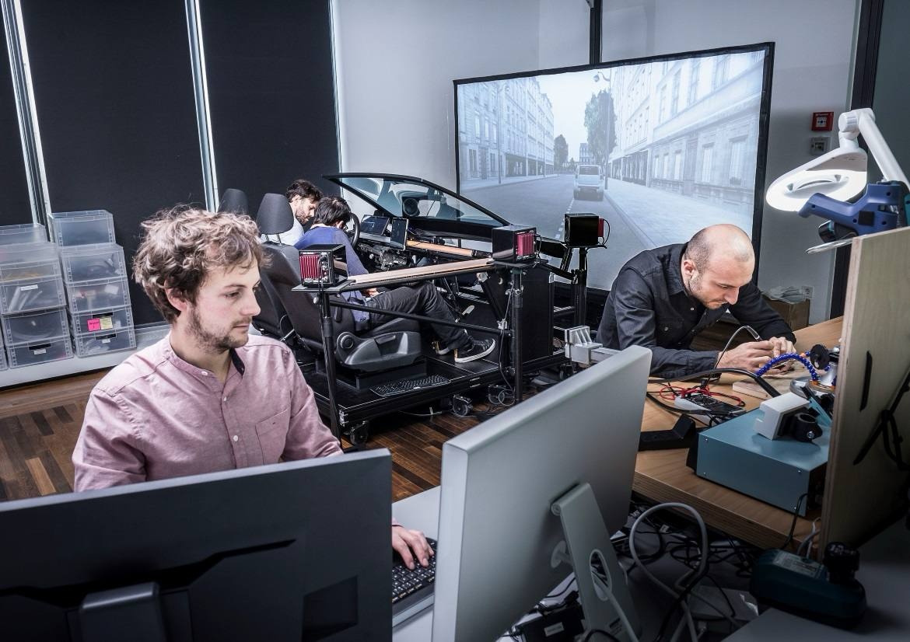
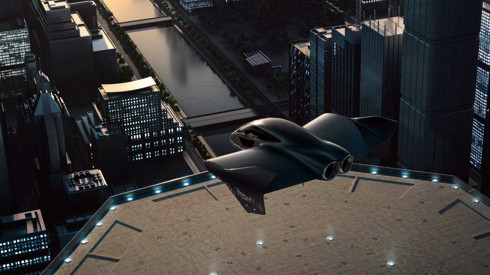

The Avocados from Mexico Kiosk was an openCV-based Emotion Tracking game featured at SXSW 2017. It was done in-house independent contractor in collaboration with NEXT/NOW agency in Chicago.
The Red Wing Wall of Honor Kiosk consisted of a media-heavy double carousel of video clips, audio clips, and text for 50 different stories. The project was done in collaboration with the designers and creative directors of SOCIALDEVIANT, a creative digital agency in Chicago, Illinois.
I worked as a full-time employee at Volkswagen Future Center Europe in Berlin, Germany.
I collaborated with UX designers and technologists to conceptualize and rapid prototype UX solutions for Level 3-5 self-driving vehicles in private and car-pooling situations.
The following includes some rapid prototyping projects I have worked on:
Concepts and prototypes for UX solutions using facial recognition, pose estimation, and eye tracking.
An audio-reactive visualization using Unity's VFX and ShaderGraph.
UI flows using state-machines in Unity.
Prototypes for automation systems using MQTT, wifi Microcontrollers, raspberry pis, and LEDs.
Concepts and designs for voice and digital assistants.


We also collaborated with Porsche on a mixed-reality experience.
I was born and raised in Miami, Florida, United States and received an undergraduate degree (Bachelor of Art, 2012) from Florida International University, where I studied film photography, photobooks, and the history of film photography. I was also dabbling in experimental video art (mostly VHS) and performance art. My most notable project from my undergraduate years was the Vickie project (2011), a documentary photo essay of my sister, Vickie.
I completed my Masters in Fine Arts (2016) at the School of the Art Institute of Chicago in the Art & Technology program. My art practice in school involved working creatively with technology with a range of tools like Processing, Unity, app development, virtual reality, openFrameworks, and arduino/DIY electronics. I also collaborated with Gabriella Hileman and May Waver in the collective Cybertwee, a collective that explores intersections of femininities, feelings, and technology with a focus on community and education, especially education in digital privacy. Our most remembered project is the Cybertwee Bakesale, a performative kickstarter where we sold cookies on the deep web as a way to teach our backers about cryptocurrency and digital privacy practices like PGP encryption.
After school, I started off my career as a technologist in front-end and Unity development and worked as a freelancer with design studios/agencies in Chicago for 3 years (2015-2018). I evolved from front-end developer to creative technologist by blending my learnings from school into my profession. It was during this time that I traveled to Europe based on the recommendation of professor Jon Cates to checkout the art and technology community that was thriving in Germany and Austria at places like Ars Electronica and the Center for Art and Media (ZKM) in Karlsruhe and the VR and game art community in Berlin. Needless to say, I fell in love.
From 2018-2020 I lived in Berlin, Germany on a work visa working as a full-time employee at Volkswagen Future Center Europe as a UX Design Technologist. I collaborated with UX designers and technologists to conceptualize and prototype UX solutions for Level 3-5 self-driving vehicles in private and car-pooling situations. I was working with a range of tools, including VR/AR, computer vision, DIY electronics, machine learning, 3D and app development.
After leaving Volkswagen, I was working again as a freelancer. I completed a 3 month fellowship collaboration in Paris building an Android hand-tracking application to control an opensource arduino-powered prosthesis. In 2021, I moved back to the United States and started immersing myself in the crypto and NFT community, collaborating as a front-end developer part-time with the NFT platform Hicetnunc. I was also part-time focusing on my artwork creating NFTs, did an AR project in partnership with Snap Spectacles, and gave an artist talk about my art career at Miami Dade College for the Advanced Photography class and an artist talk regarding NFTs and crypto for the Computer Science Club at Broward Community College.
Throughout my career as a creative technologist and developer, I have maintained my artistic practice by participating in open calls, artist residencies, and in-person + virtual galleries, always taking the skills and technologies/tools I've learned in my day jobs and using them to create art. I am currently (2022) focusing on being a full-time digital artist and selling my artwork as NFTs on Hicetnunc, Foundation, and FxHash. I am also continuing to participate in colloquiums and art school critiques. My artistic practice is mainly focused on finding new processes and techniques with emerging technologies, continuing to explore the cybertwee aesthetic, and continuing to make Web Art, Game/Virtual Reality Art, and GAN art, to name a few medias. I have shown my work in solo and group shows at institutions like Birmingham Open Media (UK) & Berlin Transmediale Festival.
Please feel free to contact me if you are interested in collaborating <3